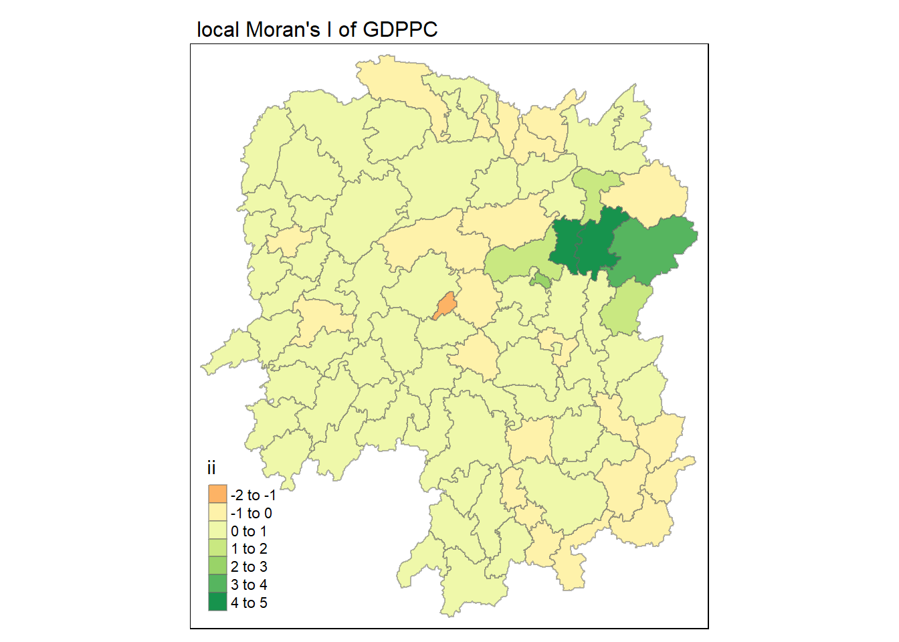
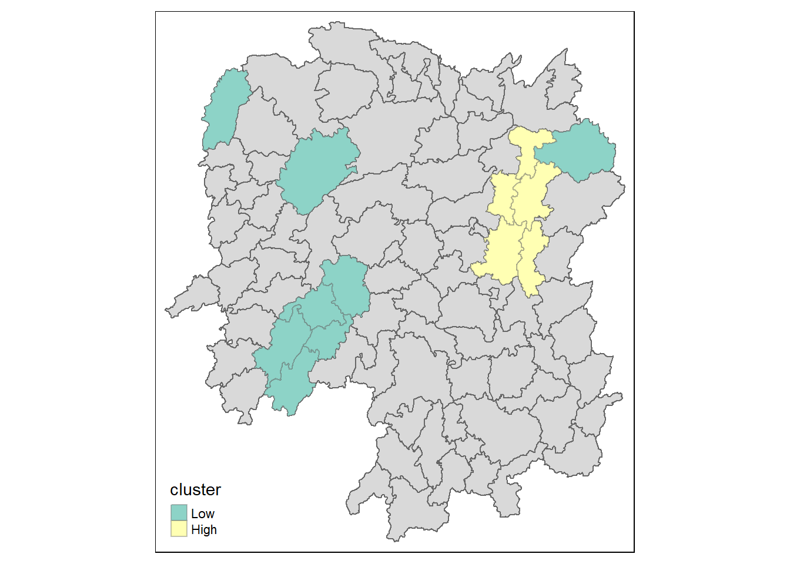

pacman::p_load(sf,tidyverse,spdep,tmap,sfdep)In-class Exercise 5
Lecture 5 notes and In-class Exercise 5
Advice from Prof Kam on Take-home Ex01:
there is a highway at the top of the 6 provinces - should have created a ~50m buffer around the 6 provinces then use the buffered area to clip the road lines in Bangkok Metropolitan Region
should sieve out short road lengths from road lines data
always plot data out, examine it in relation to the context to know whether data is properly prepared
5.1 Overview
In this hands-on exercise, we will compute Global Measures of Spatial Autocorrelation (GMSA) using spdep package. The learning points of this hands-on exercise are to:
import geospatial data using appropriate function(s) of sf package,
import csv file using appropriate function of readr package,
perform relational join using appropriate join function of dplyr package,
compute Global Spatial Autocorrelation (GSA) statistics by using appropriate functions of spdep package,
plot Moran scatterplot,
compute and plot spatial correlogram using appropriate function of spdep package.
provide statistically correct interpretation of GSA statistics.
5.2 Getting Started
5.2.1 The analytical question
In spatial policy, one of the main development objective of the local government and planners is to ensure equal distribution of development in the province. Our task in this study, hence, is to apply appropriate spatial statistical methods to discover if development are even distributed geographically. If the answer is No. Then, our next question will be “is there sign of spatial clustering?”. And, if the answer for this question is yes, then our next question will be “where are these clusters?”
In this case study, we are interested to examine the spatial pattern of a selected development indicator (i.e. GDP per capita) of Hunan Provice, People Republic of China.
5.2.2 The Study Area and Data
Two data sets will be used in this hands-on exercise, they are:
Hunan province administrative boundary layer at county level. This is a geospatial data set in ESRI shapefile format.
Hunan_2012.csv: This csv file contains selected Hunan’s local development indicators in 2012.
5.2.3 Setting the Analytical Tools
Before we get started, we need to ensure that spdep, sf, tmap and tidyverse packages of R are installed in R.
sf is use for importing and handling geospatial data in R,
tidyverse is mainly use for wrangling attribute data in R,
spdep will be used to compute spatial weights, global and local spatial autocorrelation statistics, and
tmap will be used to prepare cartographic quality chropleth map.
The code chunk below is used to perform the following tasks:
creating a package list containing the necessary R packages,
checking if the R packages in the package list have been installed in R,
- if they have yet to be installed, RStudio will installed the missing packages,
launching the packages into R environment.
5.3 Getting the Data into R environment
In this section, we will bring a geospatial data and its associated attribute table into R environment. The geospatial data is in ESRI shapefile format and the attribute table is in csv fomat.
5.3.1 Import shapefile into R environment
The code chunk below uses st_read() of sf package to import Hunan shapefile into R. The imported shapefile will be a simple features object of sf.
hunan <- st_read(dsn = "data/geospatial",
layer = "Hunan")Reading layer `Hunan' from data source
`C:\mooseksm\ISSS626-GAA\In-class_Ex\In-class_Ex05\data\geospatial'
using driver `ESRI Shapefile'
Simple feature collection with 88 features and 7 fields
Geometry type: POLYGON
Dimension: XY
Bounding box: xmin: 108.7831 ymin: 24.6342 xmax: 114.2544 ymax: 30.12812
Geodetic CRS: WGS 84We note that the simple features data has a polygon geometry and has 88 features and 7 fields. It is in WGS84 geographic coordinate system.
5.3.2 Import csv file into R environment
Next, we will import Hunan_2012.csv into R using read_csv() of readr package. The output is in R data frame class.
hunan2012 <- read_csv("data/aspatial/Hunan_2012.csv")5.3.3 Performing a relational join
The code chunk below will be used to update the attribute table of hunan’s SpatialPolygonsDataFrame with the attribute fields of hunan2012 dataframe. This is performed by using left_join() of dplyr package:
hunan_GDPPC <- left_join(hunan,hunan2012)%>%
select(1:4,7,15)5.3.4 Visualising Regional Development Indicator
Now, we are going to prepare a basemap and a choropleth map showing the distribution of GDPPC 2012 by using qtm() of tmap package.
tmap_mode('plot')
tm_shape(hunan_GDPPC) +
tm_fill("GDPPC",
n = 5,
style = "equal",
palette = "Blues") +
tm_borders(alpha = 0.5) +
tm_layout(main.title = "Equal interval classification",
main.title.size = 1,
legend.text.size = 0.6,
legend.height = 1.20,
legend.width = 1.20,
frame = TRUE)5.4 Global Measures of Spatial Association
5.4.1 Deriving Queen’s contiguity weights: sfdep methods
wm_q <- hunan_GDPPC %>%
mutate(nb = st_contiguity(geometry),
wt = st_weights(nb,
style = "W"),
.before = 1)the way the code is written avoids having too many layers i.e. calculate nb first then use it to calculate weights
use sfdep for this as its more handy than spdep for this use case; sfdep also puts the outputs into the dataframe rather than printing it out in spdep (with reference to link)
The argument
style = "W"indicates that the spatial weights will follow the “row-standardized” method, meaning that the weights for each region’s neighbors sum to 1The
.before = 1argument ensures that the new columns (nbandwt) will be inserted before the first column of thehunan_GDPPCdataset instead of being appended to last columncontiguity matrix cannot work in zone without neighbours, will need to assign allow_zone: TRUE
5.4.2 Computing Global Moran’s I
moranI <- global_moran(wm_q$GDPPC,
wm_q$nb,
wm_q$wt)
glimpse(moranI)List of 2
$ I: num 0.301
$ K: num 7.64- above dont provide p-value hence we typical perform Moran’s I test instead of just computing Moran’s I statistics (next code below)
5.4.3 Performing Global Moran’s I test:
global_moran_test(wm_q$GDPPC,
wm_q$nb,
wm_q$wt)
Moran I test under randomisation
data: x
weights: listw
Moran I statistic standard deviate = 4.7351, p-value = 1.095e-06
alternative hypothesis: greater
sample estimates:
Moran I statistic Expectation Variance
0.300749970 -0.011494253 0.004348351 test for randomisation assumption
p-value lesser than 0.05, reject null hypothesis at 95% confidence interval
5.4.4 Performing Global Moran’s I permutation test
In practice, Monte carlo simulation should be used to perform the statistical test. For sfdep, it is supported by global_moran_perm() - run nsim =99 aka 100 times:
set.seed(1234)
global_moran_perm(wm_q$GDPPC,
wm_q$nb,
wm_q$wt,
nsim=99)
Monte-Carlo simulation of Moran I
data: x
weights: listw
number of simulations + 1: 100
statistic = 0.30075, observed rank = 100, p-value < 2.2e-16
alternative hypothesis: two.sidednote that p-value is even smaller as there are more iterations - when put them together aka big number theory, converge better into normal distribution
p-value lesser than 0.05, reject null hypothesis at 95% confidence interval
can also run nsim = 999, no fixed number, and even at nsim = 999, results can be generated very fast. note that the results generated/conclusion attained is the same.
5.4.5 Computing local Moran’s I
After determing presence of spatial autocorrelation using Global Moran’s I, we now want to know where so we compute local Moran’s I at county level:
lisa <- wm_q %>%
mutate(local_moran = local_moran(
GDPPC, nb, wt, nsim =99),
.before = 1) %>%
unnest(local_moran)sfdep is a wrapper of spdep, hence besides generating the following fields, it places these columns into the data frame when the unnest() function is run:
Ii: the local Moran’s I statistics
E.Ii: the expectation of local moran statistic under the randomisation hypothesis
Var.Ii: the variance of local moran statistic under the randomisation hypothesis
Z.Ii:the standard deviate of local moran statistic
Pr(): the p-value of local moran statistic
unnest() helps to put the values from a list into a table format
note that there are 3 different p values i.e. p_ii, p_ii_sim, p_folded_sim (use pysal) - tend to pick up p_ii_sim
note that sfdep also already provides the label for the different cluster/outlier types (“mean”/“median”/“pysal”) but in spdep, this part is manual:
- note that different methods can give different results. note that when data is skewed, advise to use “median”
5.4.6 Visualising local Moran’s I
tmap_mode('plot')
tm_shape(lisa)+
tm_fill("ii")+
tm_borders(alpha = 0.5)+
tm_view(set.zoom.limits = c(6,8))+
tm_layout(main.title = "local Moran's I of GDPPC",
main.title.size = 1)
5.4.7 Visualising p-value of local Moran’s I
tmap_mode('plot')
tm_shape(lisa)+
tm_fill("p_ii_sim")+
tm_borders(alpha = 0.5)+
tm_layout(main.title = "p-value of local Moran's I",
main.title.size = 1)For better comparison, we put them next to each other:
tmap_mode('plot')
map1 <- tm_shape(lisa)+
tm_fill("ii")+
tm_borders(alpha = 0.5)+
tm_view(set.zoom.limits = c(6,8))+
tm_layout(main.title = "local Moran's I of GDPPC",
main.title.size = 1)
map2 <- tm_shape(lisa)+
tm_fill("p_ii_sim",
breaks = c(0,0.001,0.01,0.05,1),
labels = c("0.001","0.01","0.05","Not sig"))+
tm_borders(alpha = 0.5)+
tm_layout(main.title = "p-value of local Moran's I",
main.title.size = 1)
tmap_arrange(map1,map2,ncol = 2)5.5 LISA Map
lisa_sig <- lisa %>%
filter(p_ii < 0.05)
tmap_mode('plot')
tm_shape(lisa)+
tm_polygons()+
tm_borders(alpha = 0.5)+
tm_shape(lisa_sig)+
tm_fill("mean")+
tm_borders(alpha = 0.4)
- note from the p-values in lisa that some are not significant, hence the code above filters p_ii that are significant i.e. <0.05 for 95% confidence interval hence you ensure that whatever is on the map is a statistically significant cluster
Comparing against the local Moran’s I and p-value maps:
tmap_mode('plot')
map1 <- tm_shape(lisa)+
tm_fill("ii")+
tm_borders(alpha = 0.5)+
tm_view(set.zoom.limits = c(6,8))+
tm_layout(main.title = "local Moran's I of GDPPC",
main.title.size = 1)
map2 <- tm_shape(lisa)+
tm_fill("p_ii_sim",
breaks = c(0,0.001,0.01,0.05,1),
labels = c("0.001","0.01","0.05","Not sig"))+
tm_borders(alpha = 0.5)+
tm_layout(main.title = "p-value of local Moran's I",
main.title.size = 1)
map3 <- tm_shape(lisa)+
tm_polygons()+
tm_borders(alpha = 0.5)+
tm_shape(lisa_sig)+
tm_fill("mean")+
tm_borders(alpha = 0.4)+
tm_layout(main.title = "LISA Map",
main.title.size = 1)
tmap_arrange(map1,map2,map3,ncol = 3)- note from the above that on the left, actually are all poor regions aka low but then only 1 region is flagged as statistically significant low-low
5.6 Computing local Gi* statistics
We will need to
wm_idw <- hunan_GDPPC %>%
mutate(nb = st_contiguity(geometry),
wts = st_inverse_distance(nb,geometry,
scale =1,
alpha =1),
.before = 1)We will compute local Gi* using the code chunk below:
HCSA <- wm_idw %>%
mutate(local_Gi = local_gstar_perm(
GDPPC,nb,wt,nsim=99),
.before = 1) %>%
unnest(local_Gi)
HCSASimple feature collection with 88 features and 18 fields
Geometry type: POLYGON
Dimension: XY
Bounding box: xmin: 108.7831 ymin: 24.6342 xmax: 114.2544 ymax: 30.12812
Geodetic CRS: WGS 84
# A tibble: 88 × 19
gi_star cluster e_gi var_gi std_dev p_value p_sim p_folded_sim skewness
<dbl> <fct> <dbl> <dbl> <dbl> <dbl> <dbl> <dbl> <dbl>
1 0.0416 Low 0.0114 0.00000641 0.0493 9.61e-1 0.7 0.35 0.875
2 -0.333 Low 0.0106 0.00000384 -0.0941 9.25e-1 1 0.5 0.661
3 0.281 High 0.0126 0.00000751 -0.151 8.80e-1 0.9 0.45 0.640
4 0.411 High 0.0118 0.00000922 0.264 7.92e-1 0.6 0.3 0.853
5 0.387 High 0.0115 0.00000956 0.339 7.34e-1 0.62 0.31 1.07
6 -0.368 High 0.0118 0.00000591 -0.583 5.60e-1 0.72 0.36 0.594
7 3.56 High 0.0151 0.00000731 2.61 9.01e-3 0.06 0.03 1.09
8 2.52 High 0.0136 0.00000614 1.49 1.35e-1 0.2 0.1 1.12
9 4.56 High 0.0144 0.00000584 3.53 4.17e-4 0.04 0.02 1.23
10 1.16 Low 0.0104 0.00000370 1.82 6.86e-2 0.12 0.06 0.416
# ℹ 78 more rows
# ℹ 10 more variables: kurtosis <dbl>, nb <nb>, wts <list>, NAME_2 <chr>,
# ID_3 <int>, NAME_3 <chr>, ENGTYPE_3 <chr>, County <chr>, GDPPC <dbl>,
# geometry <POLYGON [°]>tmap_mode('plot')
tm_shape(HCSA)+
tm_fill("gi_star")+
tm_borders(alpha=0.5)
5.7 Visualising hot spot and cold spot areas
We plot significant hot spot and cold spot areas using the appropriate tmap functions below:
HCSA_sig <- HCSA %>%
filter(p_sim < 0.05)
tmap_mode('plot')
tm_shape(HCSA)+
tm_polygons()+
tm_borders(alpha = 0.5)+
tm_shape(HCSA_sig)+
tm_fill("cluster")+
tm_borders(alpha = 0.4)
Notes from Prof Kam:
- hands-on exercise 5 shows the old way to do it using spdep while the in-class exercise shows the new way to do it using sfdep
Notes from Prof Kam on Take-home Ex02:
Thailand has very large tourism sector
key indicators of tourism economy - should identify more than one i.e. besides total revenue by province
emerging hot and cold spot areas will be covered in Lesson 6
from take-home ex01, we already have the province level data (from HDX)